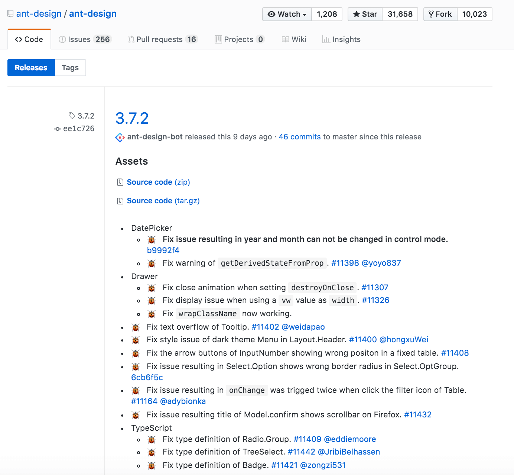

7月计划学习Node.js，试着为react-to-do-list项目实现一个简单的后端服务。 => 完成
同时，公司项目经验分享：
巧用Autoprefixer自动管理CSS属性前缀
公司移动端项目需要做兼容，首先JavaScript相关的兼容可以考虑使用babel-polyfill来解决。那么CSS自然就考虑到使用PostCSS Autoprefixer。
举个例子：查看CSS3 transform属性会发现Android 4.2下可以使用-webkit-来实现transform，然后我将Android >= 4.2加入至browserslist来使得Autoprefixer完成它的工作。
如何配置browserslist？
以下内容来自官网README
Full List
You can specify the browser and Node.js versions by queries (case insensitive):
> 5%: browsers versions selected by global usage statistics.>=,<and<=work too.> 5% in US: uses USA usage statistics. It accepts [two-letter country code].> 5% in alt-AS: uses Asia region usage statistics. List of all region codes
can be found at [caniuse-lite/data/regions].> 5% in my stats: uses [custom usage data].cover 99.5%: most popular browsers that provide coverage.cover 99.5% in US: same as above, with [two-letter country code].cover 99.5% in my stats: uses [custom usage data].maintained node versions: all Node.js versions, which are [still maintained]
by Node.js Foundation.node 10andnode 10.4: selects latest Node.js10.x.x
or10.4.xrelease.extends browserslist-config-mycompany: take queries frombrowserslist-config-mycompanynpm package.ie 6-8: selects an inclusive range of versions.Firefox > 20: versions of Firefox newer than 20.>=,<and<=work too.iOS 7: the iOS browser version 7 directly.Firefox ESR: the latest [Firefox ESR] version.unreleased versionsorunreleased Chrome versions:
alpha and beta versions.last 2 major versionsorlast 2 iOS major versions:
all minor/patch releases of last 2 major versions.since 2015orlast 2 years: all versions released since year 2015
(alsosince 2015-03andsince 2015-03-10).dead: browsers fromlast 2 versionquery, but with less than 0.5%
in global usage statistics and without official support or updates
for 24 months. Right now it isIE 10,IE_Mob 10,BlackBerry 10,BlackBerry 7, andOperaMobile 12.1.last 2 versions: the last 2 versions for each browser.last 2 Chrome versions: the last 2 versions of Chrome browser.defaults: Browserslist’s default browsers
(> 0.5%, last 2 versions, Firefox ESR, not dead).not ie <= 8: exclude browsers selected by previous queries.
You can add not to any query.
Browsers
Names are case insensitive:
Androidfor Android WebView.Baidufor Baidu Browser.BlackBerryorbbfor Blackberry browser.Chromefor Google Chrome.ChromeAndroidorand_chrfor Chrome for AndroidEdgefor Microsoft Edge.Electronfor Electron framework. It will be converted to Chrome version.Exploreroriefor Internet Explorer.ExplorerMobileorie_mobfor Internet Explorer Mobile.Firefoxorfffor Mozilla Firefox.FirefoxAndroidorand_fffor Firefox for Android.iOSorios_saffor iOS Safari.Nodefor Node.js.Operafor Opera.OperaMiniorop_minifor Opera Mini.OperaMobileorop_mobfor Opera Mobile.QQAndroidorand_qqfor QQ Browser for Android.Safarifor desktop Safari.Samsungfor Samsung Internet.UCAndroidorand_ucfor UC Browser for Android.
遭遇前后端不分离项目的兼容性问题
当<canvas>标签遇上IE，CSS样式问题也就出来了。还好社区有个库是用来专门解决这个问题，当当当当！html5shiv了解一下。
因为项目已经完成，只做兼容性调整，那么临时选择的解决方案就是手动进行语法降级，手动语法降级好痛苦 :( ，相当于人工babel-polyfill（事后灵机一动，可以直接去Babel官网转换），所以后续我打算使用Webpack来支持前后端不分离项目，使用node工程化来提升开发体验。
为了统一公司前后端不分离项目的CSS样式，同时解决兼容性方面的问题，此时Webpack就登场了。之前刚好在上一家公司写过一个Webpack多页面工具（基于Jade模板引擎 + jQuery技术栈），此次项目的特点前后端不分离，所以采用（HTML + 后端模板引擎Thymeleaf + Vue技术栈）来实现这个Webpack多页面工具。
前后端不分离情况下，项目开发需要执行mvn tomcat7:run命令来启动（以下简称tomcat模式）。
简单介绍一下Thymeleaf模板引擎，展示一段示例代码：
<script th:inline="javascript">
if (!window.__th__) { window.__th__ = {} };
window.__th__.something = [[${something}]];
</script>以类似这样的方式来获取数据，并结合Vue开发，具体语法请参照官网文档Thymeleaf 12.3 JavaScript inlining
jQuery html API 与 原生 innerHTML API
考虑PAJAX方式替换页面内容，发现原生 innerHTML API替换DOM内容后，不会自动执行<srcipt>标签，但是jQuery html API实现了这一点。
查阅其核心源码manipulation.js如下：
function domManip( collection, args, callback, ignored ) {
...
// Require either new content or an interest in ignored elements to invoke the callback
if ( first || ignored ) {
scripts = jQuery.map( getAll( fragment, "script" ), disableScript );
hasScripts = scripts.length;
// 获取<srcipt>标签数量
...
if ( hasScripts ) {
doc = scripts[ scripts.length - 1 ].ownerDocument;
// Reenable scripts
jQuery.map( scripts, restoreScript );
// Evaluate executable scripts on first document insertion
for ( i = 0; i < hasScripts; i++ ) {
node = scripts[ i ];
if ( rscriptType.test( node.type || "" ) &&
!dataPriv.access( node, "globalEval" ) &&
jQuery.contains( doc, node ) ) {
if ( node.src && ( node.type || "" ).toLowerCase() !== "module" ) {
// Optional AJAX dependency, but won't run scripts if not present
if ( jQuery._evalUrl ) {
jQuery._evalUrl( node.src );
}
} else {
DOMEval( node.textContent.replace( rcleanScript, "" ), doc, node );
}
}
}
}
}
return collection;
}有关于domManip方法的浅析文章网上也有不少，可以搜索看看。
可见jQuery是真的给力，确实需要找个时间读一读jQuery的源码，或者找个时间把这个方法剥离出来也是一个不错的选择。
开发模式改造

起初我选择的是模块化开发模式，因为项目的文件采用PAJAX方式加载，可以理解为子页面单独加载的模式。
所以，我会使用Webpack的CommonsChunkPlugin来提取共同模块，但是因为Chunk文件只会加载一次，若子页面重复加载，js文件会跳过执行，并不会渲染页面，我并不想发生这样的情况，查看Webpack源码webpack/lib/MainTemplate.js你会发现，若该模块已被加载，Webpack则不会再次加载该模块。
...
this.hooks.require.tap("MainTemplate", (source, chunk, hash) => {
return Template.asString([
source,
"// Check if module is in cache",
"if(installedModules[moduleId]) {",
Template.indent("return installedModules[moduleId].exports;"),
"}",
...
]);
});
...很糟糕，我试着修改源码，移除这段代码，但是其他的问题接踵而至，因为我每个子页面都有import部分相同的模块，同样的模块加载多次会导致页面报错。
此时，我想到使用IIFE解决此问题，我将公共的模块绑定至window全局对象，采用polyfill的形式加载。公共库则采用CDN加载，抛弃使用模块化开发模式。并且移除CommonsChunkPlugin，使得每个子页面有独立的Webpack module cache，成功的解决了此问题。
查阅相关Issues，我似乎看到Webpack 4.x有类似解决办法，但是我使用的是Webpack 3.8.1，所以暂时不考虑破坏性升级版本，在此版本上解决这个问题。此问题告一段落。
关于webpack-dev-server的调试开发，我暂时没有解决，因为devServer生成的文件是在内存中的，并没有真实文件，以至于无法通过tomcat模式访问到，我暂时想到的是试着去用反向代理解决这个问题，但是还没有去实践。我准备试着去尝试解决，这样这套工具在我司前后端项目中能为前端工程化提升开发体验做出贡献，既能做到调试开发，也能做到自动完成兼容性等代码优化。
题外话
项目优化过程中涉及到图片压缩问题，前端也同样会压缩用户上传的图片，来减少带宽压力。在编写过程中，我对比了下iView和Element Upload组件的源码，发现Element果然是我心中的榜样，写的确实给力，让开发者少了很多烦恼，当然也正是iView，让我学习到了一些新的知识。
刚好我压缩完的图片是Blob类型，导致我在使用iView组件时，无法上传压缩后的图片，而是被强制上传原图。
// iView Upload Component 相关源码
if (before && before.then) {
before.then(processedFile => {
// 压缩图片为Blob类型，导致我的图片白压缩了……，只能上传原图
if (Object.prototype.toString.call(processedFile) === '[object File]') {
this.post(processedFile);
} else {
this.post(file);
}
}, ...);
}// Element Upload Component 相关源码
if (before && before.then) {
before.then(processedFile => {
const fileType = Object.prototype.toString.call(processedFile);
// 这一步就处理的很NICE
if (fileType === '[object File]' || fileType === '[object Blob]') {
// 学习了学习了
if (fileType === '[object Blob]') {
processedFile = new File([processedFile], rawFile.name, {
type: rawFile.type
});
}
...
this.post(processedFile);
} else {
this.post(rawFile);
}
}, ...);
}但是在IE下视乎Blob类型存在问题，我暂时还没有解决，当然我选择折中方案，如果遇到不兼容情况，则reject返回原图。
初探Node.js开发
谈一些项目中的特点吧：
- 对响应信息中的
code和message信息进行统一维护。 - 对请求参数中的静态参数进行统一维护。
- 感受到了社区所说的回调地狱，采用
Async Function+Promise解决。 - 拒绝无限
if，使用express-validator优雅解决参数校验
// if 判断实现参数校验
if (!token) { res.json(response('NO_TOKEN')); return next() }
...// 优雅的参数校验
const validatior = [
check('token', 'NO_TOKEN').exists({ checkFalsy: true }),
...
]
const callback = async (req, res, next) => {
const [errors] = validationResult(req).array()
if (errors) { res.json(response(errors.msg)); return next() }
...
})react-to-do-list改造
- 因拖拽功能涉及到数据库内容设计问题，暂时移除
react-dnd功能。 - 全面替换为ant-design组件，并且修复Badge组件Type类型错误BUG。
- 使用箭头函数代替Class方法，移除
bind相关代码 - 使用fetch实现ajax请求工作
- 使用
react-router控制页面跳转 - 使用
git tag为项目打标签（命令参阅文章底部链接）
// fetch 相关代码
interface IResponseError extends Error {
response?: Response
}
interface IResponse {
code: number
message: string
[propName: string]: any
}
const checkStatus = (response: Response) => {
if (response.status >= 200 && response.status < 300) {
return response
} else {
// 为Error扩充了一个response属性
const error: IResponseError = new Error(response.statusText)
error.response = response
throw error
}
}
const responseProxy = (response: IResponse) => {
// response可能包含其他属性
const { code, message } = response
if (code !== SUCCESS) {
antdMessage.warning(message)
throw response
}
return response
}// 使用react-router控制页面跳转
import { RouterProps } from 'react-router'
import { FormComponentProps } from 'antd/lib/form'
...
class Register extends Component<FormComponentProps & RouterProps, IRegisterState> {
constructor(props: FormComponentProps & RouterProps) {
...
}
public goSignin = () => {
this.props.history.push('/signin')
}
...
}Pull requests

相关仓库
相关链接
- 本文链接: https://zongzi531.com/2018/08/03/%E5%88%9D%E6%8E%A2Node-js/
- 版权声明: 本博客所有文章除特别声明外，均采用 CC BY-NC-SA 3.0 许可协议。转载请注明出处！